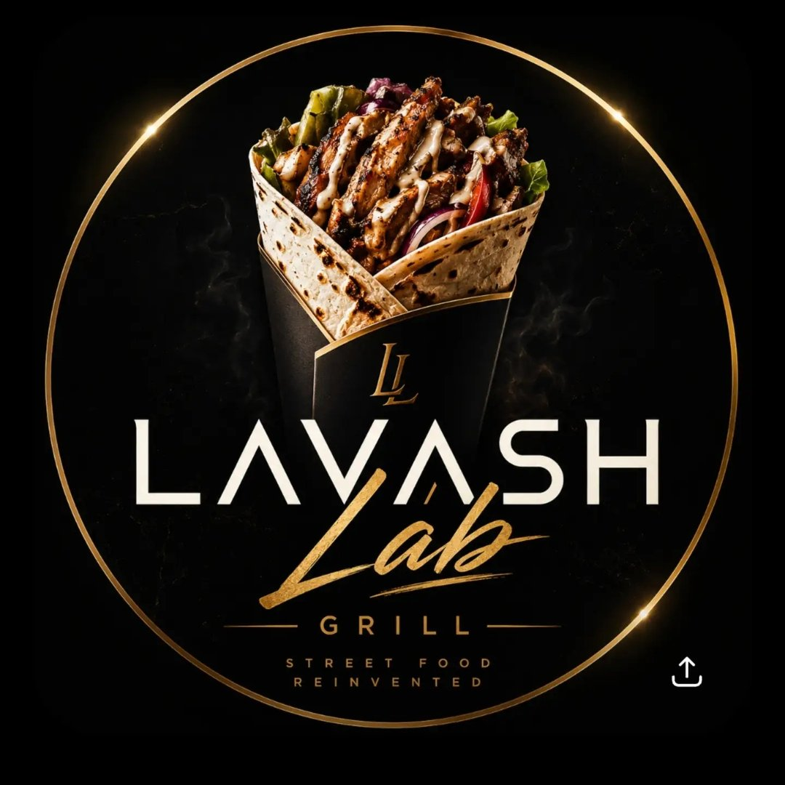

Відгуки про Lavash Lab — Шаурма в Одесі
Оцінки відвідувачів з Google Карт

← Повернутися на сайт
4.5
★★★★★
На основі 53 оцінок (48 з текстом)
Всі відгуки
5 ★
1 ★
Сортування:
Спочатку нові
Спочатку старі
Спочатку з високою оцінкою
Спочатку з низькою оцінкою